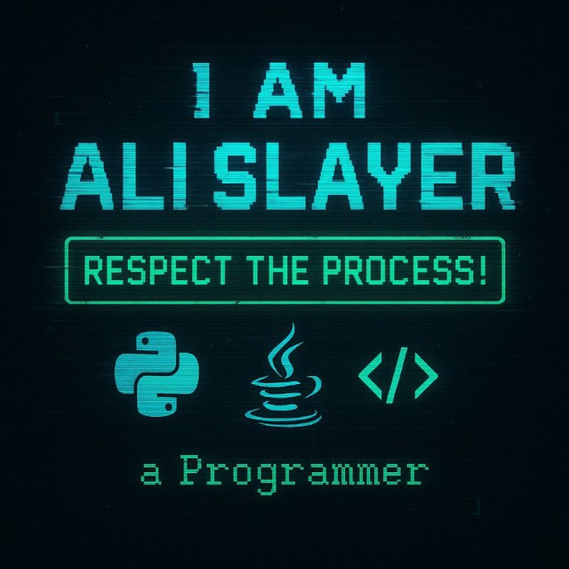

Ali Slayer
i am Ali Slayer, 18y.o Programmer
The sunset is beautiful, isn't it?
In Love With Coding , Never Give Up Learning
"Only In The Darkness You Can See The Stars"
My Stack
Java
Python
JavaScript
CSS
C#
HTML
a little Kotlin
PHP